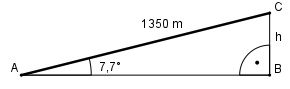

Aufgabe 94 Eine Gebirgsbahn hat auf 1 350 m Länge eine Steigung von 13,5%. Welchen Höhenunterschied h überwindet sie dabei?

13,5% steht für: Auf 100 m steigt die Strecke um 13,5 m. 13,5 m tan α = --------- = 0,135 --> α = 7,7° 100 m Im Dreieck ABC: h sin 7,7° = -------- | *1350 m 1350 m h = 1350 m * sin 7,7° = 1350 m * 0,134 = 180,9 m